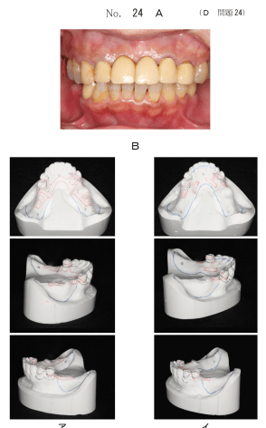
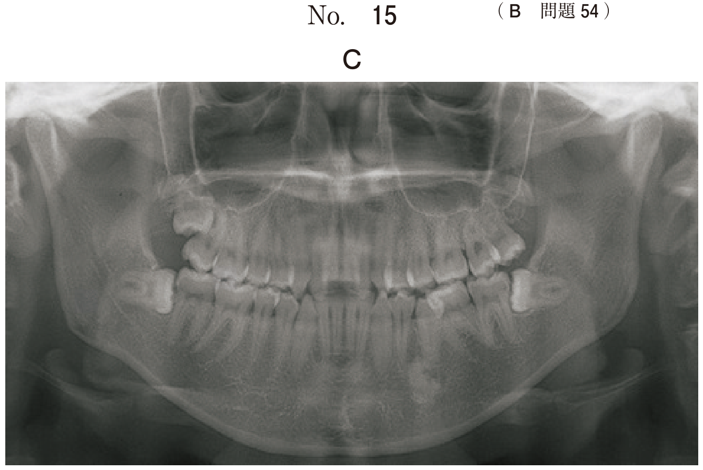

連結子は義歯の構成要素を連結する部分で、大連結子と小連結子に区別される。
弾力性に富む材料を用いると以下の不都合が生じる：
構音障害や審美性低下は剛性と直接関係しない。
| 種類 | 特徴 |
|---|---|
| 前パラタルバー | 口蓋前方部を弓状に走るバー。発音障害や異物感が出やすい。 |
| 中パラタルバー | 両側第二小臼歯付近で口蓋中央部を横走するバー。発音や異物感への影響少。 |
| 後パラタルバー | 口蓋後方の両側第二大臼歯付近を結ぶバー。嘔吐反射を招く場合あり。 |
| 馬蹄形バー | 口蓋の前方から後方に向かって馬蹄形をなして走行。口蓋隆起がある場合に用いる。 |
| パラタルストラップ | 帯状の大連結子。0.7mm以下と薄くでき異物感が少ない。支持の向上が期待。 |
| パラタルプレート | 口蓋を広範囲に覆う。遊離端欠損や多数歯欠損に用いる。 |
| 種類 | 特徴 |
|---|---|
| リンガルバー | 舌側歯槽堤粘膜上を横走するバー。幅4〜5mm、厚さ2〜2.5mm。歯肉縁から3mm以上離す。自浄性に優れる。 |
| リンガルプレート | 残存歯舌面までを薄く広く覆うプレート状の大連結子。維持・安定に優れる。辺縁歯肉を覆うため自浄性に劣る。 |
大連結子と支台装置や義歯床を連結する部分。残存歯の歯間鼓形空隙を通過する場合は、5mm以上離し不潔域を形成しないようにする。
KennedyⅠ級とⅡ級の症例で大連結子に弾力性に富む高分子材料を用いた場合に生じる不都合はどれか。すべて選べ。
【解説】大連結子に剛性がないと、床下粘膜負担圧の偏在、義歯安定の低下、支台装置の負担増加が生じる。構音障害や審美性は材料の弾力性と直接関係しない。
62歳の女性。食物が嚙みにくいことを主訴として来院した。下顎部分床義歯を製作することとした。精密印象の写真（別冊No.28）を別に示す。
矢印で示す部位から得られるのはどれか。1つ選べ。
【解説】精密印象で舌側の顎堤形態を記録することで、大連結子の外形（リンガルバーの設計位置）を決定できる。
65歳の女性。臼歯部欠損による咀嚼困難を主訴として来院した。部分床義歯を製作することとし、研究用模型上で2種類の義歯設計を行った。初診時の口腔内写真（別冊No.24A）と研究用模型の写真（別冊No.24B）とを別に示す。
イと比べたアの説明で正しいのはどれか。2つ選べ。

【解説】アはリンガルバー、イはリンガルプレート。リンガルバーは違和感が少ない（細い）、歯茎を健康に保ちやすい（自浄性に優れる）。
設計の異なる下顎義歯の写真（別冊No. 21A、B）を別に示す。
Aと比較したBの大連結子の長所はどれか。1つ選べ。

【解説】Aはリンガルプレート、Bはリンガルバー。リンガルバーの長所は自浄性（歯肉を覆わないため清掃しやすい）。